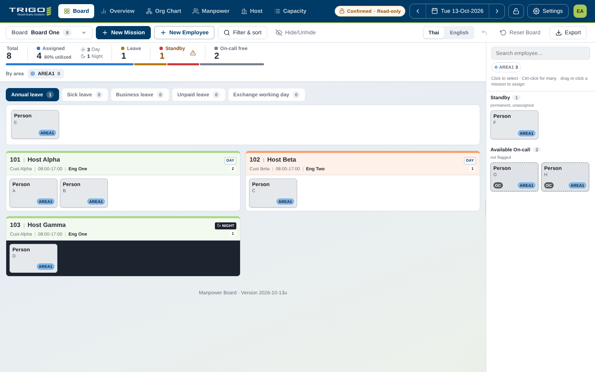
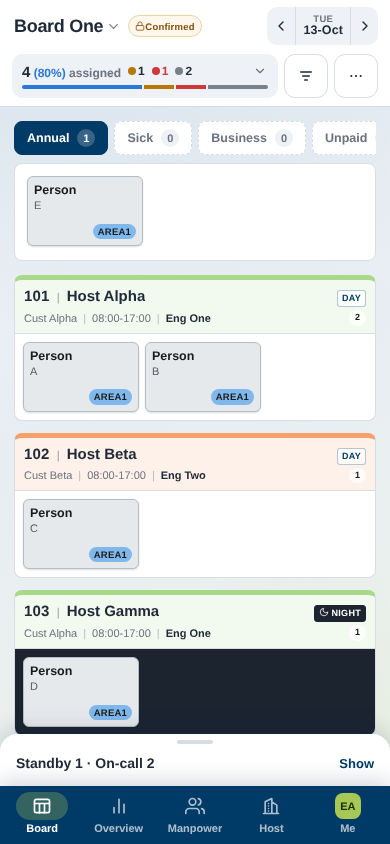
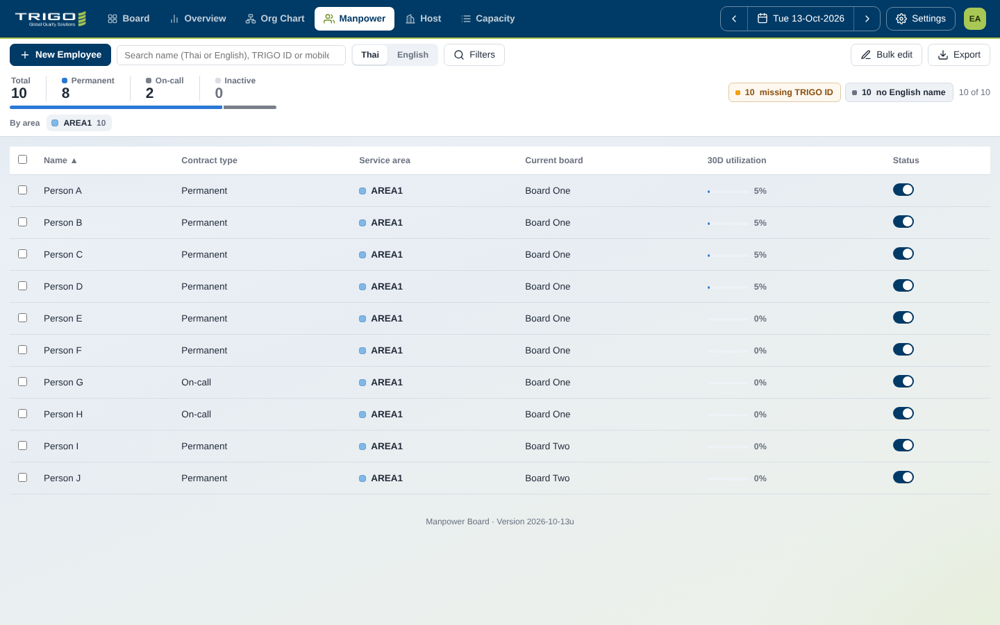
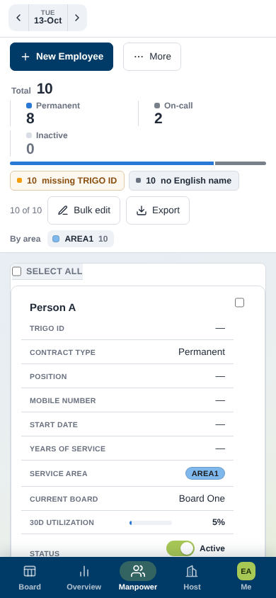
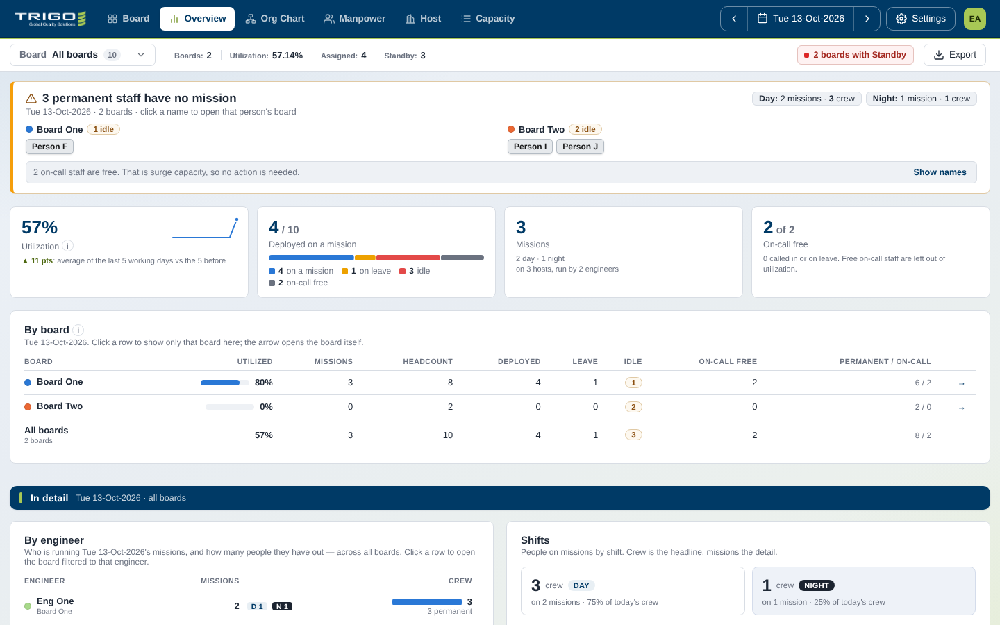
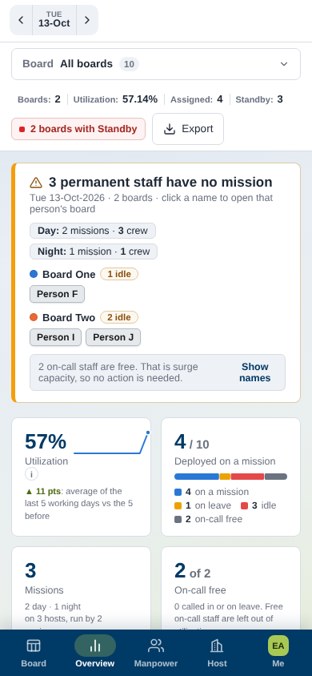
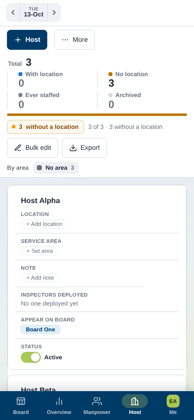

Real screenshots from the current build (desktop 1440 px, phone 390 px, same test data). The phone Board tab already matches the desktop's Signal look well, so it stays as it is. The gaps are on the other tabs (Overview, Manpower, Host), which still use an older phone layout. Below are 4 changes, ordered by impact. Nothing is implemented yet.
1. Every tab gets the Board's header: page title on the left, date pill on the right.
2. Stat tiles become the Board's summary card (one line, colour dots, segmented bar, tap to expand).
3. One ⋯ button: Bulk edit, Export and Filters go inside it, as on Board.
4. Quieter record cards: sentence-case labels like the desktop tables, no card inside a card, 4 key fields with the rest folded.






